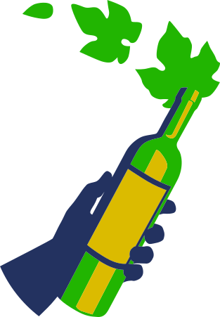

01 — the feed one grid, every post-type, icons woven through

176posts
1.631followers
293following
natural wine festival a'dam
a one-day festival of living wine · de hallen · 23 nov '26
united by wine · naturalwinefestival.nl
united by wine · naturalwinefestival.nl
edition 03lot 23.11.26
natural
wine
festival
wine
festival
united by wine
the makers

oller del mas
no. 01 · catalonia
what's includedone ticket

tasting

lessons

oysters

kitchen

market
all day

below the hype
it's just common
sense.
sense.
the makers

le coste
no. 02 · lazio
the lessons · 15:00
talha wine
countdown
t–30
lot 23.11.26
the makers

gut oggau
no. 03 · burgenland

tickets live
take your
place →
place →
€32,50 · pass
how it reads
The register is the backbone — numbered maker labels recur down the grid, each flagged with the hand-and-bottle mark. Between them sit the other post-types from the same system: the icon "plates" (what's included), the manifesto (dark, with the vine watermark), the countdown and the ticket push. One look, many jobs.
the icons do three things
They carry the quirk, they reintroduce a controlled pop of the original navy/gold/green, and they act as wayfinding — the hand-and-bottle = a maker, the brain = a lesson, the rosette seal = the festival's mark of authenticity.
02 — the post-types all one system · the register leads
the makers · ed. 03
oller del mas
no. 01 · catalonia, spain
farmingbiodynamic
added yeastnone
sulphur< 20 mg/l
lead · maker revealThe engine. One per grower, numbered, flagged with the hand-and-bottle mark + full disclosure.
what's includedone ticket · one day
tasting
lessons
oysters
kitchen
market
all day
the day · icon platesThe icons' showcase — the full woodcut set as a what's-included grid. Pure brand pop.
below the hype
it's just
common sense.
common sense.
united by wine
manifestoThe dark breather, with the vine illustration glowing as a watermark. Carries the philosophy.
the lessons · 14:00
montsant
masterclass
masterclass
25+ classes · go beyond the hype
the lessonsWorkshops, led by an icon. Swap the mark per type — brain / glass / oyster.
nothing added.
nothing
taken away.
nothing
taken away.
the festival's mark
the seal / creedThe rosette as a mark of authenticity. Use for values, "verified natural", reposts.
23 nov '26 · tickets live
take your place.
€32,50 · festival pass →
conversion / ticketPhoto + seal + hard CTA. The campaign-window push, same system.
03 — the marks your existing woodcut set, used as-is